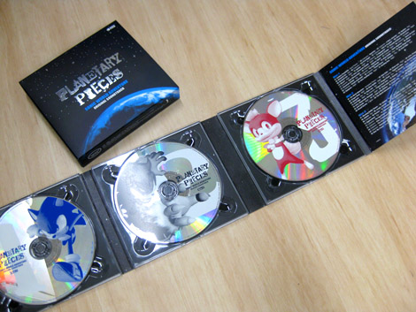
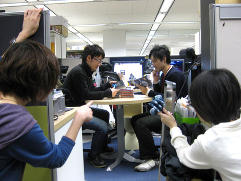
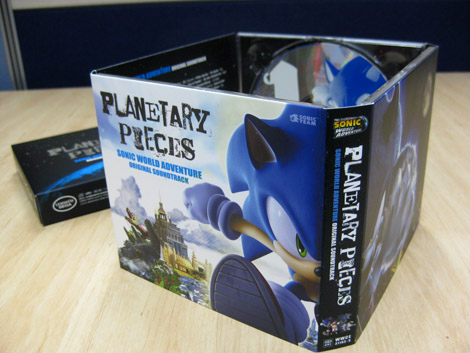

『SWA サントラ発売！』
2009年01月28日
あいしーいー♪
あいしーいー♪
あないっつぁおーうぃずぃんりー♪
……マツバラ、
何、唸ってるの？
歌ってるの！！
あ、歌ってるつもりだったんだ……
怪しすぎて通報するとこだった。
だってホラ、今日28日は、
『SWA』のサントラの発売日でしょ？
『SWA』の主題歌
「Endless Possibility」も入っているから、嬉しくてさ！
ほう。
「ソニック」って曲も凄くいいもんね～。
ゲーム中で「Endless Possibility」が流れてきたときは
開発中なのに泣きそうになったもん。
ていうか。
音楽がこんなに良くなきゃ
あのハードなバグチェックを乗り越えられなかったよね……
延々と繰り返されるバグチェックプレイも
BGMがいいから続けられる、と
開発スタッフの皆さんにも好評で……
いや、そういうことバラさなくていいから！！
じっくり聴きたいから、私もサントラ欲しいな。
う・ふ・ふ。
ヨシノ、これなーんだ。

あっ！！
また勝手に持ってきて！！
いやいや、ちゃんと買ったのよ！
ああ、なんだ…。
ほう、3枚組なんだ。
しかも1枚だいたい30曲！
全部で91曲も入ってるんだよ！
1曲1曲も長く入ってて、ガッツリ楽しめるし！
そ、それは……
すごいボリューム。
1日中聞いてられそう。
でしょー！
サントラの詳しい情報は、 こちら でご確認ください。
全国のCDショップで、本日発売ですよ♪
……あ。そういえば。
ん？ なになに？
さっき、『SWA』のサウンドを手がけた
サウンドチームの大谷さんと廊下ですれ違ったよ。
橋本ディレクターと『SWA』サントラの話をしにきたみたい。
！！
どうしてそれを早く言わないの！！
ここはブログに何かコメントを頂かなければ！
行くよ、ヨシノ！！
イタイ、イタイ！
ひ、引っ張るなー！

↑ミーティング中のお2人に忍び寄るヨシノとマツバラ
おおっ……
本当にミーティングしてる！
邪魔しちゃ悪いよね。
あ、あのお2人の手元にあるのは！！
『SWA』サントラだね。
すいませ―――ん、大谷さん！
あっ……(邪魔しないように言ったばっかりなのに)
こんにちは！ 企画のマツバラです！
こっちのテンション低いのはヨシノです！
大谷さん ：あぁ、ハミだしブログの（笑）
ご覧くださってましたか！
ありがとうございます！
今回、『SWA』サントラ発売について
何かお話を聞かせて頂けないかと……
このブログをご覧の皆さまに
ひとことメッセージをお願い致します！
大谷さん ：全収録曲はもちろん、
パッケージの細部に至るまで、超こだわって作りました。
最近は携帯音楽プレイヤーやPCで聴く人も多いでしょうから
自分だけのプレイリストを作ったりして、
好きなように楽しんでもらいたいですね。
大谷さん、ありがとうございました！
大谷さん ：……ところで、このパッケージって
こうするとイラストがつながるんだよ。

本当だ！ 気付かなかった！
大谷さん ：世界一周出来るようにね。
ニクイ演出ですな。
大谷さん ：それと、パッケージのどこかに
さりげなく飛んでるチップがいるんだよ。
えっ！ どこですか！
大谷さん ：チップ自身を探す旅でもあるからね。
CDを聴きながら、もう一度チップを探してみて下さい。
……お。
歌詞カードには、主題歌「EndlessPossibility」と、ED挿入歌の
歌詞と日本語対訳が載ってるんですね。
それ、嬉しいよね！
この対訳がまたカッコいいんだ！
ふむふむ、サビの部分が……
「見えるぜ オレには見える
この手にいつか届くモノ
それは終わりなき可能性」
……って訳してある。
カッコいい～！！
自由でクールなヒーロー・ソニックを
これ以上なくあらわしてますね。
これは……燃える！
あいしーいー♪
あいしーいー♪
不敵に笑って音速で走るソニックが目に浮かぶわ～！
えーっと、続きは……
「見えるぜ オレには見える
いつだってこの胸の中にあり
この心を……」
ぜっ、全部読み上げちゃダメだよヨシノ！！
これは買ってからのお楽しみ！！
ちぇ。
大谷さん ：歌詞やCDの高音質なサウンドなど
是非、お手にとってお楽しんでくださいね！
本日発売！
『ソニックワールドアドベンチャー』オリジナルサウンドトラック
『プラネタリー･ピーシーズ』
日時: 2009年01月28日 19:00 | パーマリンク


 ソニックを愛する、元気な『SWA』2年目プランナー。
ソニックを愛する、元気な『SWA』2年目プランナー。 マイペースな『SWA』2年目プランナー。
マイペースな『SWA』2年目プランナー。
 ご意見・ご要望はこちら
ご意見・ご要望はこちら RSS
RSS